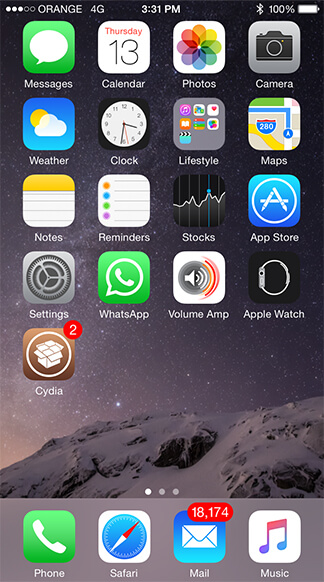
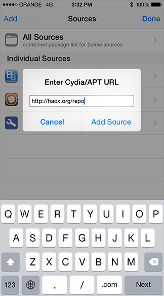
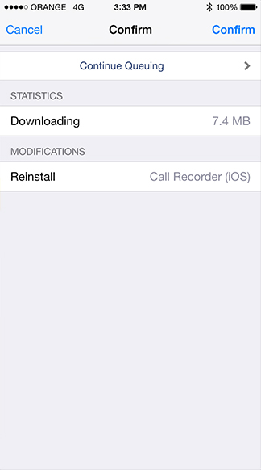
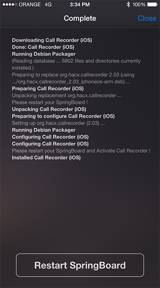
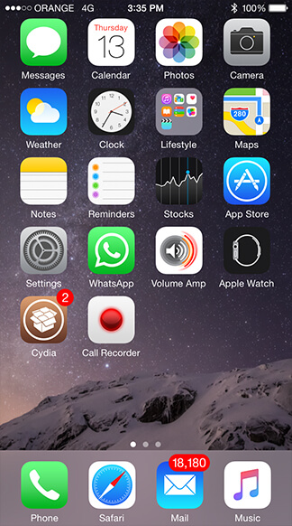
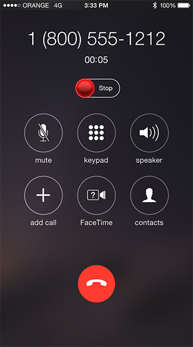

iPhone का कॉल और वीओआईपी रिकॉर्डर

आपकी Google Drive पे अपनेआप upload करता है
(अपने Google Drive को कनेक्ट करे, और ये अपनेआप आपकी रिकॉर्डिंगको अपलोड करेगा
अपने सभी कल रिकर्ड करें
ये आपकी Skype, Viber, FaceTime, Telegram को अपनेआप रिकर्ड करेगा
ये iPhone 5-8+ के लिए है
ये सभी जेलब्रोकन (iOS 8 - 14) डीभाइस मे काम करता है
कैसे इन्स्टल और जैलब्रेक करे?
iOS 11 - 11.4 beta 3
जैलब्रेक करनेकेलिए https://unc0ver.dev/ लिंक पे जाए और जैलब्रेक टुल डाउनलोड करे
iOS 10 - 10.2
जैलब्रेक करने के लिए yalu.qwertyoruiop.com लिंक पे जाएँ और जैलब्रेक टुल डाउनलोड करें
-
१. ‘Cydia’ एप् खोलिए (अगर आपने पेहेले ही इन्स्टल किया है तो ये लिंक पे क्लिक करें)
-
 २.‘Sources’ बटन पे क्लिक करें और ‘Edit’ बटन पे क्लिक करें
२.‘Sources’ बटन पे क्लिक करें और ‘Edit’ बटन पे क्लिक करें -
३. बायी और ‘Add’ बटन पे क्लिक करें
3.१. और फिर https://hacx.org/repo उसपे टाइप करें
३.२. अब ‘Add Sources’ पे क्लिक करें -
 ४. अब ‘Cydia’ को ‘Finish’ होने तक इन्तजार करें
४. अब ‘Cydia’ को ‘Finish’ होने तक इन्तजार करें -
 ५. उपर के ‘Search’ बटन मे क्लिक करें
५. उपर के ‘Search’ बटन मे क्लिक करें
- उसपे टाइप करें 'Call Recorder'
- और 'Call Recorder X+ (iOS 12,13,14)' को क्लिक करें
-
 ६. अब 'Install' को क्लिक करें
६. अब 'Install' को क्लिक करें -
७. और फिर 'Confirm' बटन को दबाएँ
७.१. प्रोसेस होने तक इन्तजार करें -
८. प्रोसेस होने तक इन्तजार करें
८.१. अब 'Restart SpringBoard' बटनको क्लिक करें -
९.'Call Recorder X+' एप को खोलिए
-
 १०. आप कि ‘activation code’ उस पे डालिए जो आप को ये एप खरिदने के बाद मिला है और 'Activate' बटन को क्लिक करें
१०. आप कि ‘activation code’ उस पे डालिए जो आप को ये एप खरिदने के बाद मिला है और 'Activate' बटन को क्लिक करें -
 ११. अब 'Agree' बटन को क्लिक करें
११. अब 'Agree' बटन को क्लिक करें
११.१ और आपका 'Call Recorder' एप अब इन्स्टल हो गया -
अब आप कल करते वक्त रिकर्ड बटन अएगा जो अपने-आप अपकी सभी कल रिकर्ड करेगा
सामान्य प्रश्न
आपकी मद्धत के लिये ये कुछ सामान्य प्रश्न है जो आपको ये एप चलाने मे मद्धत करेगा, अगर आपका और कोइ प्रश्न है तो आप 'संपर्क' फार्म का उपयोग कर हमको पुछ सकते है
-
१. ये एप कैसे इन्स्टल करें ?
उसके लिए आप 'कैसे इन्स्टल करें' पेज देख सकते है
-
२. जैलब्रेक क्या है ?
जैलब्रेक एक विधि है जो आपकी डीभाइसको सानदार टुइक चलाने की आजादी देता है जिसके बिना कल रिकर्डइग सम्भब नही है, आपकि डीभाइस जैलब्रेक करनेके लिए 'कैसे इन्स्टल करें' पेज देख सकते है
-
३. ‘Cydia’ कि कौनसे ‘Source’ पे ‘iOS Call Recorder’ मिलेगा ?
‘Cydia’ के ‘Sources’ पे ‘https://hacx.org/repo’ डालिए और "Call Recorder (iOS)" को ‘Search’ मे खोजने के बाद उसे इन्स्टल करें
-
४. क्या iOS Call Recorder को चलाने के लिए कोइ और सेवा या कन्फरेन्स कलका उपयोग करना पडेगा?
नही, ये एक स्वचालित एप है जो अपने-आप आपकी सभी कल को रिकर्ड करके आपके ही डीभाइस पे सेभ करेगा, ये इस तरहा कि एक ही एप है
-
५. अपना रिकॉर्डिंग Google Drive पे कैसे अपलोड करें?
आप iOS Call Recorder कि ‘Setting’ मे जा के ‘Google Drive’ पे क्लिक करें उसके बाद अपना गुगल आइडी से लग इन करें, अब अपनि पसंदका सेटिंग चुनिए
साइड बार के 'Sync Recordings' पे क्लिक करके भी आप अपना रिकॉर्डिंग अपलोड कर सकते है -
६. एप खरिदने के बाद अगर Activation code नही मिला तो ?
१. एप को खोलकर इन्तजार करें अपने आप आएगा
२. इस लिंकका उपयोग करके इमेल भेजिये https://hacx.org/restore_code.php?product=CallRecorder
३. आपकी इमेलका SPAM folder मे देखिए
४. आपकी पेमेन्ट के इमेल के साथ callrecorder@hacx.org पर Activation code के लिए माग करें